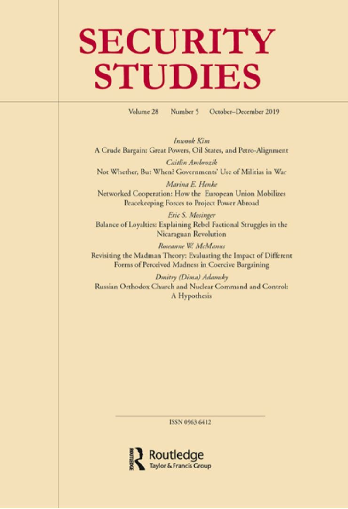

收录于合集 #新刊速递 123个
期刊简介

《安全研究》收录出版创新性的学术稿件——无论是理论研究、实践经验分享还是两者兼而有之。安全研究包含广泛的议题，从核扩散、核威慑、军民关系、战略文化、种族冲突、流行病与国家安全、民主政治、外交决策到定性与多方法研究的发展。根据2018年的Journal Citation Reports显示，其2018年的影响因子为1.706，在91种国际关系类期刊中排名第30（30/91）。
本期编委
【编译】 李博轩、王国欣、姚寰宇
【审校】 冯毓婧、刘金晶、徐琛 ****
【排版】高佳美

本期目录
1. 石油交易：大国、产油国、和石油联盟
A Crude Bargain: Great Powers, Oil States, and Petro-Alignment
2. 不谈是否，但问何时？战争中政府对民兵的使用
Not Whether, But When? Governments’ Use of Militias in War
3. 网络式合作：欧盟如何动员维和部队向海外部署力量？
Networked Cooperation: How the European Union Mobilizes Peacekeeping Forces to Project Power Abroad
4. 忠诚度的平衡：解释尼加拉瓜革命中的叛乱组织派系斗争
Balance of Loyalties: Explaining Rebel Factional Struggles in the Nicaraguan Revolution
5. 俄罗斯东正教与核指挥及控制：一个假设
Russian Orthodox Church and Nuclear Command and Control: A Hypothesis
6. 再论疯子理论：对强制性交涉中不同形式可感知疯狂影响的评估
Revisiting the Madman Theory: Evaluating the Impact of Different Forms of Percei ved Madness in Coercive Bargaining
摘要译文
1.
石油交易： 大国、产油国、和石油联盟
【 题目 】A Crude Bargain: Great Powers, Oil States, and Petro-Alignment
【 作者 】Inwook Kim，新加坡管理大学政治学副教授。
【 摘要 】石油联盟，指大国提供安全以换取产油国石油优惠政策的一种交易安排，是一种虽然被广泛使用但尚未被理论化的能源安全战略。这种交易的一个层面是大国选择不同层次的安全承诺来获得产油国的政策优惠。大国根据什么标准来对产油国的重要程度进行排序呢？我们如何对不同类型的石油联盟进行概念化？在不同的石油联盟类型下大国和产油国各自到底想要交易什么？本文认为市场权力和地缘战略位置共同决定了产油国战略价值和脆弱性，进而产生四种对应的石油联盟类型——安全保障型、战略联盟型、战略优势型和战略忽视型。为了展示大国如何基于石油市场和不同地缘战略地位的独到逻辑来建立、利用以及维持石油联盟，本文精心挑选两个案例进行对比：1970-1991年的沙特和科威特、1990-2013年的阿塞拜疆和厄瓜多尔。本文的发现对大国的大战略、产油国的战略行为和石油在国际安全中的角色三个方面具有重要的指导意义。
Petro-alignment, a quid pro quo arrangement whereby great powers offer security in exchange for oil states’ friendly oil policies, is a widely used and yet under theorized energy security strategy. One consequential aspect of this exchange is that great powers choose different levels of security commitment to keep oil producers friendly. With what criteria do great powers rank oil states? How dowe conceptualize different types of petro-alignments? What exactly do greatpowers and oil producers exchange under each petro- alignment type? I posit thata mix of market power and geostrategic location determines the strategic valueand vulnerability of individual client oil states, which then generates four corresponding types of petro-alignment- security guarantee, strategic alignment, strategic favor, and neglect. Two carefully selected case comparisons—Saudi Arabia and Kuwait in 1970–91, and Azerbaijan and Ecuador in 1990–2013—show howgreat powers created, utilized, and maintained petro-alignments under theunique logic of oil markets and across varying geopolitical settings. Thefindings have important implications on great powers’ grand strategies, strategic behaviors of oil states, and the role of oil in international security.
【 编译】王国欣
【校对】冯毓婧、姚寰宇
**
**
2.
** 不谈是否，但问何时？** ** ****** ** 战争中政府对民兵的使用**
【题目 】Not Whether, But When? Governments’ Use of Militias in War
【 作者 】Caitlin Ambrozik，乔治·华盛顿大学艾略特国际事务学院兼职教授。
【 摘要 】尽管政府在国内冲突中使用民兵的行为会最终削弱政府权威，但政府仍会将民兵作为战场上的一种支援力量。本文通过将国内冲突分为不同的冲突阶段来探索政府使用民兵的政策选择。国内冲突中的军事行动一般由4个阶段构成：备战阶段、目标区域清洗阶段、目标区维持和控制阶段、目标区建设阶段。本文认为政府关于动用民兵的决策取决于政府军的实力、民兵在军事行动上的优势、以及不同斗争阶段的类型。在媒体关注度可能增加的关键斗争阶段，政府会限制民兵的使用，除非政府军不能赢得胜利或在此阶段民兵具有军事行动上的优势。在伊拉克对ISIS的战争中，政府在提克里特和拉马迪所采取的进攻性军事行动为本文提出的理论提供初步的佐证。
Although government use of militias during civil conflict can ultimately undermine stateauthority, governments still use militias for battle field assistance. This paper examines the selectivity of government decisions to use militias by disaggregating civil conflict to the level of battle phases. Civil-conflict battles typically consist of four phases: preparation, clear, hold, and build. I argue that governments decide to use militias based on the strength of government security forces, operational advantages of militias, and the type of battlephase. Governments will limit the use of militias during key battle phases thatare likely to receive increased media attention unless a victory secured by government security forces is unlikely or militias hold an operational advantage. A comparative analysis of the offensive operations in Tikrit and Ramadi during Iraq’s war against the Islamic State of Iraq and Syria (ISIS) lends initial support to this theory.
【编译】王国欣
【校对】冯毓婧、姚寰宇
**
**
3.
网络式合作： 欧盟如何动员维和部队向海外部署力量？
** 【题目 】**Networked Cooperation: How the EuropeanUnion Mobilizes Peacekeeping Forces to Project Power Abroad
【 作者 】Marina E. Henke, 德国赫尔蒂行政学院和美国西北大学国际关系教授，研究重点为军事干预，维和行动以及欧洲安全与防卫政策。
【 摘要 】欧盟如何招募在欧盟维和特派团中服务的部队和警察？本文认为，关键的欧盟成员国和欧盟官员战略性地利用其所处的社会和制度网络，嵌入其中并劝说不情愿的成员国提供这些力量。这些网络提供有关部署偏好的信息，促进旁支付和问题关联，并提供可靠的承诺。因此，正如现有文献中经常提到的，欧盟的运作不一定依赖于欧盟内部的偏好趋同。相反，欧盟维和部队的招募依赖欧盟内高度积极主动的行为体，而它们利用社会和制度联系来说服其他国家加入欧盟维和特派团。
How does the European Union (EU) recruit troops and police to serve in EU peacekeeping missions? This article suggests that pivotal EU member states and EU officials make strategic use of the socialand institutional networks within which they are embedded to bargain reluctant states into providing these forces. These networks offer information on deployment preferences, facilitate side-payments and issue-linkages, and provide for credible commitments. EU operations are consequently not necessarily dependent on intra-EU preference convergence—as is often suggested in the existing literature. Rather, EU force recruitment hinges on highly proactive EU actors, which use social and institutional ties to negotiate fellow states into serving in an EU missions.
【 编译】李博轩
【校对】刘金晶、 徐琛
**
**
4.
忠诚度的平衡： 解释尼加拉瓜革命中的叛乱组织派系斗争 ****
【题目】 Balance of Loyalties: Explaining RebelFactional Struggles in the Nicaraguan Revolution
【 作者】 Eric S. Mosinger, 加拿大卡尔顿大学小罗伯特·奥登(Robert A. Oden Jr.)博士后研究员。
【摘要】 如何解释叛乱组织派系斗争的原因和结果？现有的解释集中在外部因素和物质因素对叛乱组织内部的破坏。然而，即使在没有外部冲击的情况下，叛乱组织也会受困于内斗和组织分裂。本文提出了叛乱组织派系斗争的内生性和社会性理论，其中领导权纠纷是由叛乱组织内部忠诚度平衡的变化引起的。在本文的模型中，敌对的叛乱组织领导人通过两种网络培养忠诚度，即招募网络和运营网络，它们是发起领导权争夺，发动政变或分裂组织的动力基础。本文的理论基于对尼加拉瓜的桑地诺民族解放阵线（FSLN）的案例研究，而该组织在1975-1976年间分裂为三个派系。利用有关FSLN指挥官的原始网络数据集，本文追踪了该组织的网络结构随时间的变化情况，并认为围绕普通武装人员忠诚的争夺是FSLN分裂原因所在。
What explains the causes and outcomes ofrebel factional struggles? Existing explanations focus on exogenous andmaterial factors that disrupt rebel organizations’ internalprocesses. Yet rebel groups succumb to infighting and organizational splinterseven in the absence of external shocks. In this article I present an endogenousand social theory of rebel factional struggles, in which leadership disputesresult from a shifting balance of loyalties within a rebel organization. In mymodel, rival rebel leaders cultivate the loyalty of two types of networks,recruitment networks and operational networks, which serve as power bases toinitiate leadership struggles, launch coups, or split organizations. I build mytheory through a case study of Nicaragua’s Frente Sandinista de Liberación Nacional (FSLN), which splintered into three factions in 1975–76. Drawing on an original network dataset of FSLN commanders, Itrace how the organization’s network structure changed over time, spurringdisputes over rank-and-file fighters’loyaltiesthat tore the FSLN apart.
【 编译】李博轩
【校对】刘金晶、徐琛
**
**
5.
俄罗斯东正教与核指挥及控制：一个假设
【题目】 Russian Orthodox Church and Nuclear Command and Control: A Hypothesis
【作者】 Dmitry (Dima) Adamsky，以色列赫兹利亚跨学科研究中心（IDC Herzliya）副教授。
【摘要 】俄罗斯东正教在俄罗斯当前的国家安全政策中扮演了重要角色。教会和战略群体的交织在核武器综合设施中体现最为明显——神职人员已经渗透到各级部队并参与作战活动，并视自己为国家核潜力意义的提供者和核潜力的守护者。本文首先强调了俄罗斯教会与核之间的关系，并重点讨论了教会对俄罗斯核指挥与控制的影响。研究结果表明，俄罗斯的军事神职人员（与苏联的政客一样但不同于其他国家的神职人员）可能会成为俄罗斯未来国家安全决策的参与者；事实上，俄罗斯可能出现两条平行的指挥权力系统且二者之间可能会存在紧张关系。本文介绍了这一独特现象被忽视的原因及其对国际安全理论和实践的影响。
The Russian Orthodox Church plays an immense role in current Russian national security policy. The intertwining ofthe church and the strategic community is nowhere more visible than in the nuclear-weapons complex, where the priesthood has penetrated all levels of command, been involved in operational activities, and positioned itself as a provider of meanings for, and guardian of, the state’s nuclear potential. The first work to highlight the phenomenon of the Russian church-nuclear nexus, this article focuses on the ecclesiastical impact on Russian nuclear command and control. The findings suggest that it is not inconceivable that the Russian military clergy—like the Soviet political officers and contrary to chaplains worldwide—might become future participants in decision making on matters of national security, and that de facto there might be two parallel chains of command authority emerging in Russia, with potential tensions between them. The article outlines the causes of this overlooked singularity and its implications for the theory and practice of international security.
【 编译】姚寰宇
【校对】刘金晶、徐琛
**
**
6.
再论疯子理论： 对强制性交涉中不同形式可感知疯狂影响的评估
【 题目】 Revisiting the Madman Theory: Evaluating the Impact of Different Forms ofPerceived Madness in Coercive Bargaining
【作者】 Roseanne W. McManus，宾夕法尼亚州立大学政治科学与国际事务系副教授。
【摘要】 本文重新审视了“疯子理论”背后的理论逻辑——该观点认为在强制性交涉中，被视为疯狂的人能获得一定的优势。作者建立了一个理论，用一种与分析强制性交涉相关的方式将可被感知的疯狂进行定义。作者区分了四种可感知的疯狂并从两个维度对他们进行分解。第一个维度是领导人是否被感知到（a）进行理性计算但倾向于选择极端结果，还是（b）在实际上已经偏离了选择进行基于理性结果的决策。第二个维度是领导人的疯狂是否被感知到是（a）受环境影响的，还是（b）受其个人性情影响的。作者认为最有利于进行强制性交涉的疯狂类型是受环境影响的极端偏好选择。作者以阿道夫·希特勒、尼基塔·赫鲁晓夫、萨达姆·侯赛因和穆阿迈尔·卡扎菲四个案例对其进行了研究和阐述。
This article reconsiders the theoretical logic behind the “Madman Theory”—the argument that it can be beneficial in coercive bargaining to be viewed as mad, or insane. I theorize about how we can best define perceived madness in a way that is relevant for analyzing coercive bargaining. I identify four types of perceived madness, broken down along two dimensions. The first dimension is whether a leader is perceived to (a) make rational calculations, but based on extreme preferences, or (b) actually deviate from rational consequence-based decision making. The second dimension is whether a leader’s madness is perceived to be (a) situational or (b) dispositional. I argue that situational extreme preferences constitute the type of perceived madness that is most helpful in coercive bargaining. I illustrate my argument using case studies of Adolf Hitler, Nikita Khrushchev, Saddam Hussein, and Muammar Gaddafi.
【编译】姚寰宇
【校对】刘金晶、徐琛
**
**
【新刊速递】第01期 | Review of International Studies Vol.45, No.4, 2019
【新刊速递】第02期 | International Relations Vol.33, No.3, 2019
【新刊速递】第03期 | International Organization Vol.73, No.3, 2019
【新刊速递】第04期 | World Politics, Vol.71, No.4, 2019
【新刊速递】第05期 | European Journal of International Relations
【新刊速递】第06期 | Security Studies, Vol.28, No.4, 2019
【新刊速递】第07期|International Security, Vol 44, No. 2, 2019
【新刊速递】第08期| Cambridge Review of International Affairs,Vol.32,No.4
【新刊速递】第09期| International Relations of Asia-Pacific Vol.19,No.3
【新刊速递】第10期 | International Studies Review, Volume.21, No.3,
2019
【新刊速递】第11期|Cooperation and Conflict, Vol. 54, No. 4,
2019【新刊速递】第12期
| International Affairs, Vol.95,
No.6，2019
【新刊速递】第13期|Chinese Journal of International Politics, No.4,
2019
【新刊速递】第14期|Chinese Journal of International Politics, No.3, 2019
【新刊速递】 第15期 | International Organization, No.4, 2019
【新刊速递】第16期 | International Studies Quarterly, No.4, 2019
[【新刊速递】第17期 | World Politics, Vol.72, No.1,

国政学人
支持学术公益与知识传播
微信扫一扫赞赏作者 __赞赏
已喜欢，对作者说句悄悄话
取消 __
发送给作者
发送
最多40字，当前共字
上一页 1/3 下一页
长按二维码向我转账
支持学术公益与知识传播
受苹果公司新规定影响，微信 iOS 版的赞赏功能被关闭，可通过二维码转账支持公众号。